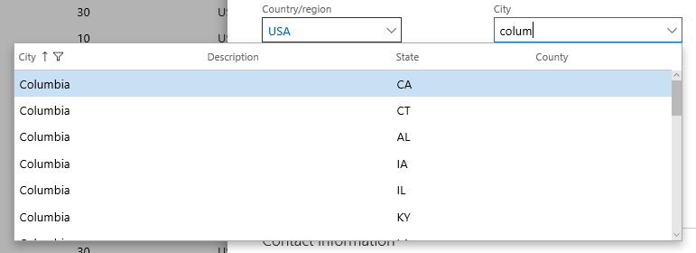
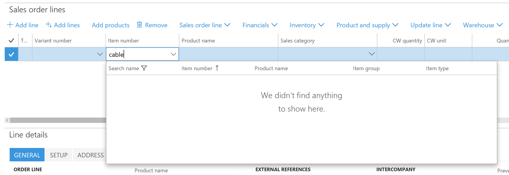

Informationen per Suchen finden
Important
Diese Dokumentation ist teilweise von Microsoft verfasst und wurde nicht auf Vollständigkeit geprüft. Wenn informationen fehlen oder ein weiteres Kapitel hinzugefügt werden soll bitte eine Mail an das Dokumentations Team schreiben.
Viele Felder verfügen über Suchen, mit denen Sie schnell den richtigen oder gewünschten Wert finden. Den Suchen wurden viele Erweiterungen hinzugefügt, die diese einfacher und produktiver in der Anwendung machen. In diesem Thema erfahren Sie mehr über die neuen Suchfunktionen und erhalten wertvolle Tipps für deren optimale Nutzung.
Responsive Suchen
In älteren Versionen musste der Benutzer explizit eine Aktion durchführen, um das Dropdownmenü zu öffnen. So musste beispielsweise ein Sternchen (*) im Steuerelement eingegeben werden, um die Suche basierend auf dem aktuellen Wert des Steuerelements zu filtern. Oder der Benutzer musste auf die Dropdownschaltfläche klicken oder eine Tastenkombination aus ALT+NACH-UNTEN verwenden. Suchsteuerelemente wurden wie folgt modifiziert, um den aktuellen Webmethoden besser gerecht zu werden:
Dropdownmenüs für Suchen öffnen sich nun automatisch, sobald die Dateneingabe pausiert. Dabei werden die Inhalte des Dropdownmenüs basierend auf dem Wert des Suchsteuerelements gefiltert.
Beachten Sie, dass das alte Verhalten, bei dem das Dropdownmenü automatisch geöffnet wurde, wenn der Benutzer ein Sternchen (*) eingegeben hat, nicht mehr unterstützt wird.
Nach dem Öffnen des Suchendropdownmenüs geschieht Folgendes:
- Der Cursor bleibt im Suchsteuerelement (kein Fokus auf einen Wechsel zum Dropdownmenü), sodass Sie weiterhin Änderungen am Wert des Steuerelements vornehmen können. Allerdings kann der Benutzer noch die NACH-OBEN-TASTE und die NACH-UNTEN-TASTE verwenden, um Zeilen im Dropdownmenü zu ändern und die aktuelle Zeile im Dropdownmenü auszuwählen.
- Der Inhalt des Dropdownmenüs wird angepasst, nachdem die Änderungen am Wert des Suchsteuerelements vorgenommen wurden.
Angenommen Sie haben ein Suchfeld namens Stadt.
Ist der Fokus auf dem Feld Stadt, können Sie nach der gewünschten Stadt suchen, indem Sie einige Buchstaben, beispielsweise "tan", eingeben. Nachdem Sie die Texteingabe beendet haben, öffnet sich die Suche automatisch, und es werden alle Städte angezeigt, die mit "tan" beginnen.
{kind=link}
Zu diesem Zeitpunkt ist der Cursor noch im Suchfeld. Wenn Sie die Eingabe fortsetzen und diese sich zu "Tanne" ändert, passt sich der Inhalt der Suche automatisch an und gibt den letzten Wert des Steuerelements wieder.

Obwohl der Fokus noch auf das Suchsteuerelement gesetzt ist, können Sie die NACH-OBEN-TASTE oder die NACH-UNTEN-TASTE nutzen, um die Zeile zu markieren, die Sie auswählen möchten. Wenn Sie die Eingabe-Taste drücken, wird die markierte Zeile von der Suche ausgewählt und der Wert des Steuerelements aktualisiert.

Mehr als nur IDs eingeben
Bei der Eingabe von Daten versuchen Benutzer in der Regel, eine Entität, beispielsweise einen Debitor oder Kreditor, anhand des Namens zu identifizieren und nicht anhand des Bezeichners, der die Entität wiedergibt. Viele (jedoch nicht alle) Suchen lassen jetzt kontextabhängige Dateneingabe zu. Diese leistungsstarke Funktion ermöglicht dem Benutzer, die ID oder den entsprechenden Namen in das Suchsteuerelement einzugeben.
Beachten Sie dazu beispielsweise das Feld Debitorenkonto beim Anlegen eines Auftrags. Dieses Feld zeigt die Kontokennung des Debitors, allerdings würde ein Benutzer eher einen Kontonamen statt einer Kontokennung für das Feld eingeben, wenn er einen Auftrag anlegt, beispielsweise "Forest Wholesales" anstelle von "US-003."
Beginnt der Benutzer mit der Eingabe einer Kontokennung in das Suchsteuerelement, öffnet sich das Dropdownmenü automatisch so wie im vorherigen Abschnitt beschrieben und der Benutzer sieht die Suche wie unten gezeigt.
{kind=link}
Allerdings kann der Benutzer jetzt auch den Anfang eines Kontonamens eingeben. Wird dies erkannt, wird dem Benutzer die folgende Suche angezeigt. Beachten Sie, wie die Spalte Name zur ersten Spalte in der Suche wird und wie die Suche basierend auf der Spalte Name sortiert und gefiltert wird.

Verwenden der Rasterspaltenüberschriften für eine erweiterte Filterung und Sortierung
Die Sucherweiterungen, die in den beiden vorherigen Abschnitten vorgestellt wurden, haben die Navigationsmöglichkeiten eines Benutzers in Zeilen einer Suche basierend auf einer "Beginnt mit"-Suche für die Felder Kennung oder Name in der Suche stark verbessert. Allerdings gibt es Situationen, in denen eine erweiterte Filterung oder Sortierung erforderlich ist, um die richtige Zeile zu finden. In solchen Fällen muss der Benutzer die Filter- und Sortieroptionen in den Rasterspaltenüberschriften innerhalb der Suche verwenden. Angenommen, ein Mitarbeiter gibt eine Auftragsposition ein, bei der das richtige "Kabel" als Produkt gefunden werden muss. "Kabel" in das Steuerelement Artikelnummer einzugeben ist nicht hilfreich, da kein Produktname mit "Kabel" beginnt.

Stattdessen muss der Benutzer den Wert des Suchsteuerelements löschen, das Suchdropdownmenü öffnen und das Dropdownmenü mittels der Rasterspaltenüberschrift wie unten gezeigt filtern. Ein Maus- oder Touch-Benutzer kann einfach auf eine beliebige Spaltenüberschrift klicken bzw. tippen, um auf die Filter- und Sortieroptionen für diese Spalte zuzugreifen. Ein Tastaturbenutzer muss die Kombination ALT+NACH-UNTEN Pfeil ein weiteres Mal drücken, um den Fokus auf das Dropdownmenü zu legen. Danach kann der Benutzer in die richtige Spalte wechseln und STRG+G drücken, um das Dropdownmenü für die Rasterspaltenüberschrift zu öffnen.

Nachdem der Filter angewendet wurde (siehe Bild unten), kann der Benutzer die Zeile wie gewohnt suchen und auswählen.